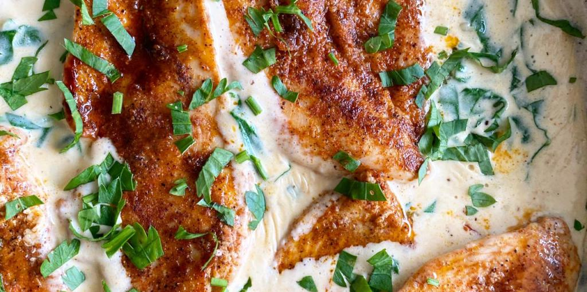
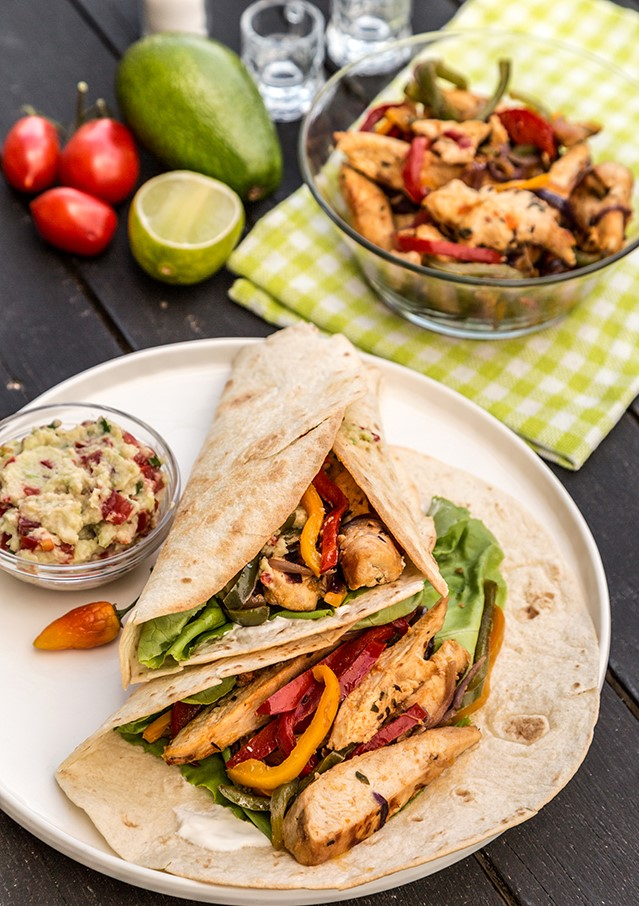
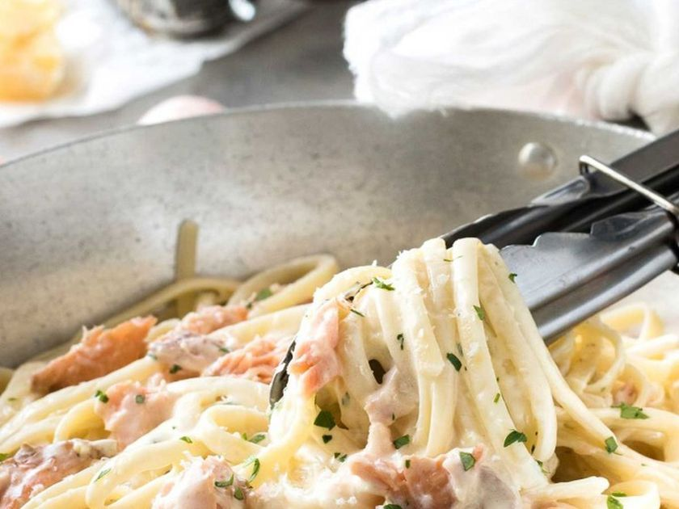

Idei indraznete cu care va puteti surprinde familia si pe cei dragi:
Cina este masa de seara sau si mancarea pregatita pentru a fi servita atunci. De obicei este ultima masa a zilei si consta din produse alimentare usor de digerat care asigura cantitatea energetica necesara pentru timpul somnului (lactate, paine, sunca, s.a.m.d.). In unele tari si regiuni, spre exemplu Peninsula Iberica, cina este masa cea mai importanta a zilei, mancarurile servite fiind asemanatoare cu cele pentru pranz din alte tari.
1) Pui toscan in sos alb cremos (pentru 2 portii)
|
*1 bucata de piept de pui de aprox 180 gr pe care am feliat-o
*200 ml smantana pentru gatit
*1/3 lingurita boia dulce, piper, sare, praf de usturoi – calibrati voi dupa gust
*1 legarura mica de patrunjel
*1 cub de unt
*3-4 rosii uscate
*1 mana de spanac
|
|

|
Modul de preparare e super simplu: prima data se face mixul de condimente si se pune peste carnea de pui. Se condimenteaza bucatile de carne.
Spanacul se spala si se taie putin, iar rosiile se taie cam in 2-3, sa fie fasii lungi si subtirele.
Cubul de unt se pune in tigaie, iar cand s-a topit se pun si bucatile de piept de pui. Carnea se gateste la foc mediu spre mare cam 8 minute in total, pe ambele parti. Veti vedea ca e diferit sa gatiti in unt, fata de ulei! Carnea va iesi mult mai frageda!
Dupa ce s-a gatit carnea, scoateti bucatile pe o farfurie si in aceasi tigaie turnati smantana lichida, dar dati focul mic pentru ca se poate arde repede! Puneti rosiile uscate si spanacul si cam in 2-3 minute a fost gata.
In cazul in care sosul se ingroase putin cam tare puneti si 20-30 ml de lapte si amestecati bine. Ulterior asezati bucatile de pui peste sos si presarati patunjel proaspat tocat!
PS!: depinde de smantana folosita si astfel sosul poate sa fie mai gros sau nu. Daca considerati ca e prea gros puneti putin lapte (valabil si daca reincalziti mancarea), iar daca e prea subtire cu siguranta puteti pune 20-30 grame de parmezan ras sau 2-3 cuburi de gorgonzola!
Pofta buna!
2) Fajitas de pui
INGREDIENTE:(pentru 4 portii):
|
*2 bucati medii piept de pui
*sare
*piper proaspat macinat
*2 linguri ulei
*1 ceapa mare taiata julien
*3 ardei grasi de culori diferite
Pentru marinata:
*2-3 linguri suc lamaie verde
*3 linguri ulei de masline
*1 catel usturoi tocat
*1/2 lingurita sare
*1/2 lingurita chimion macinat
*1/2 lingurita fulgi de chili
*1/2 lingurita fulgi de ceapa(bucatele)
*1/2 ardei iute tocat (cu seminte)
*1/2 legarura patrunjel verde tocat (coriandru pentru cei care il suporta)
Pentru asamblare:
*8 tortilla
*guacamole
*smantana
*salata verde
|
|

|
Pentru inceput taiati pieptul de pui in fasii. Daca este foarte gros acesta va fi taiat astfel incat sa nu fie mai inalt de un deget. Amestecati intr-un vas mai mare toate ingredientele pentru marinata, apoi introduceti puiul si incercati sa il acoperiti uniform cu aceasta. Va fi lasat pentru minim 2 ore la marinat (eu l-am lasat peste noapte), apoi carnea va fi taiata in fasii medii-mari. Pregatiti guacamole cu 5 minute inainte sa incepeti prepararea puiului in tigaie. Puteti sa lasati avocado felii subtiri (sau il pasati cu furculita) si il amestecati cu rosii tocate cubulete, suc de lamaie verde (limeta), sare, piper, si patrunjel (coriandru). Continuati pregatirea retetei de pui fajitas prajind puiul pana s-a rumenit unioform, dar cu grija pentru ca nu doriti carne uscata si fada. Carnea trebuie sa ramana suculenta si frageda. Puneti pieptul de pui in folie de aluminiu (sau in hartie de copt) si lasati-l sa se odihneasca 5 minute (in folie isi va pastra temperatura mai bine, se va raci lent). Puneti si foile de tortilla in cuptorul preincalzit la 120°C, invelite in folie de staniol sau hartie de copt.
In tigaia in care ati prajit puiul adaugati o lingura de ulei si puneti ceapa si ardeii taiati fasii potrivite la prajit. Amestecati in tigaie abia dupa doua minute, apoi mai lasati-le inca 2-3 minute pe foc. Puneti puiul peste ardei si ceapa, amestecati si mai lasati pe foc inca 2 minute. Scoateti foile de tortilla din cuptor si intindeti 1 lingura varfuita de smantana pe cate o foaie. Peste smantana aranjati 2-3 frunze de salata, apoi puiul cu ardei si ceapa si la final puneti cate o lingura de guacamole. Impachetati foile de tortilla cu puiul fajitas si puneti rapid pe masa pentru a fi savurate calde.
Pofta buna!
3) Paste cu somon si sos alb
Ingrediente pentru 4 portii:
|
*500 gr paste tagliatelle
*300 gr peste somon
*1 buc ceapa
*300 ml smantana de gatit
*100 gr parmezan
*1 legatura patrunjel proaspat
*praf de sare
*praf de piper negru
*2 linguri ulei de masline
|
|

|
Tocati ceapa marunt. Puneti ceapa intr-o cratita mica, cu ulei de masline si un praf de sare (sarea ajuta ceapa sa se inmoaie frumos). Prajiti ceapa, dar nu prea mult; ea trebuie sa ramana moale. Cand ajungeti in acel punct, opriti focul si puneti ceapa deoparte intr-un vas. Tocati cubulete somonul si prajiti-l intr-o tigaie cu ulei de masline, pana ce este bine facut. Condimentati cu putina sare. Cand somonul s-a facut, puneti-l intr-un vas separat si scurgeti-i uleiul. Fierbeti pastele conform instructiunilor de pe ambalaj. Intr-o craticioara mica, puneti smantana de gatit pe foc, amestecati in ea si lasati-o la foc mediu cateva minute, cat sa scada putin. Cand ajunge la punctul de fierbere, mai lasati-o pe foc maxim un minut, nu mai mult pentru ca se branzeste. Intr-o cratita incapatoare, adaugati ceapa, somonul, smantana pentru gatit, pastele scurse de apa si amestecati foarte bine. Serviti cu parmezan proaspat ras, piper rasnit si putin patrunjel.
NOTA: Secretul acestei retete este sa preparati ceapa, somonul si smantana separat; in acest fel, fiecare ingredient isi pastreaza aroma si culoarea.
In functie de preferinte, se pot prepara cu penne sau cu somon fume.
Pofta buna!